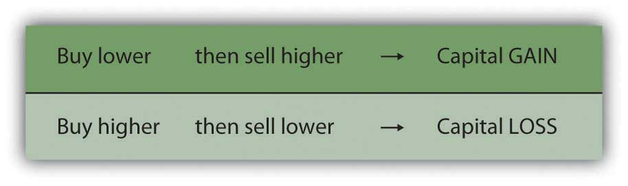
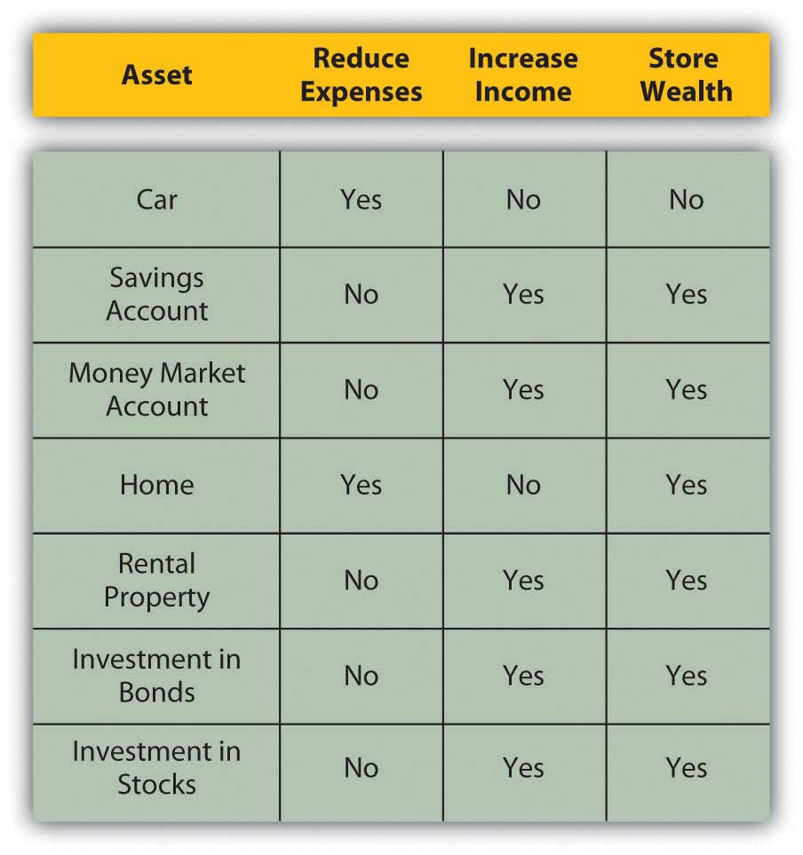

As defined earlier in this chapter, an asset is any item with economic value that can be converted to cash. Assets are resources that can be used to create income or reduce expenses and to store value. The following are examples of tangible (material) assets:
When you sell excess capital in the capital markets in exchange for an asset, it is a way of storing wealth, and hopefully of generating income as well. The asset is your investment—a use of your liquidity. Some assets are more liquid than others. For example, you can probably sell your car more quickly than you can sell your house. As an investor, you assume that when you want your liquidity back, you can sell the asset. This assumes that it has some liquidity and market value (some use and value to someone else) and that it trades in a reasonably efficient market. Otherwise, the asset is not an investment, but merely a possession, which may bring great happiness but will not serve as a store of wealth.
Assets may be used to store wealth, create income, and reduce future expenses.
If the asset is worth more when it is resold than it was when it was bought, then you have earned a capital gainWealth created when an asset is sold for more than the original investment.: the investment has not only stored wealth but also increased it. Of course, things can go the other way too: the investment can decrease in value while owned and be worth less when resold than it was when bought. In that case, you have a capital lossWealth lost when an asset is sold for less than the original investment.. The investment not only did not store wealth, it lost some. Figure 2.7 "Gains and Losses" shows how capital gains and losses are created.
Figure 2.7 Gains and Losses
The better investment asset is the one that increases in value—creates a capital gain—during the time you are storing it.
Some assets not only store wealth but also create income. An investment in an apartment house stores wealth and creates rental income, for example. An investment in a share of stock stores wealth and also perhaps creates dividend income. A deposit in a savings account stores wealth and creates interest income.
Some investors care more about increasing asset value than about income. For example, an investment in a share of corporate stock may produce a dividend, which is a share of the corporation’s profit, or the company may keep all its profit rather than pay dividends to shareholders. Reinvesting that profit in the company may help the company to increase in value. If the company increases in value, the stock increases in value, increasing investors’ wealth. Further, increases in wealth through capital gains are taxed differently than income, making capital gains more valuable than an increase in income for some investors.
On the other hand, other investors care more about receiving income from their investments. For example, retirees who no longer have employment income may be relying on investments to provide income for living expenses. Being older and having a shorter horizon, retirees may be less concerned with growing wealth than with creating income.
Some assets are used to reduce living expenses. Purchasing an asset and using it may be cheaper than arranging for an alternative. For example, buying a car to drive to work may be cheaper, in the long run, than renting one or using public transportation. The car typically will not increase in value, so it cannot be expected to be a store of wealth; its only role is to reduce future expenses.
Sometimes an asset may be expected to both store wealth and reduce future expenses. For example, buying a house to live in may be cheaper, in the long run, than renting one. In addition, real estate may appreciate in value, allowing you to realize a gain when you sell the asset. In this case, the house has effectively stored wealth. Appreciation in value depends on the real estate market and demand for housing when the asset is sold, however, so you cannot count on it. Still, a house usually can reduce living expenses and be a potential store of wealth.
Figure 2.8 "Assets and the Roles of Assets" shows the roles of assets in reducing expenses, increasing income, and storing wealth.
Figure 2.8 Assets and the Roles of Assets
The choice of investment asset, then, depends on your belief in its ability to store and increase wealth, create income, or reduce expenses. Ideally, your assets will store and increase wealth while increasing income or reducing expenses. Otherwise, acquiring the asset will not be a productive use of liquidity. Also, in that case the opportunity cost will be greater than the benefit from the investment, since there are many assets to choose from.